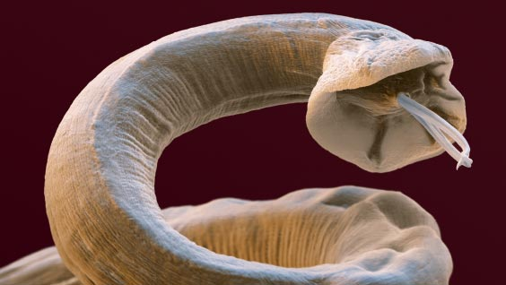
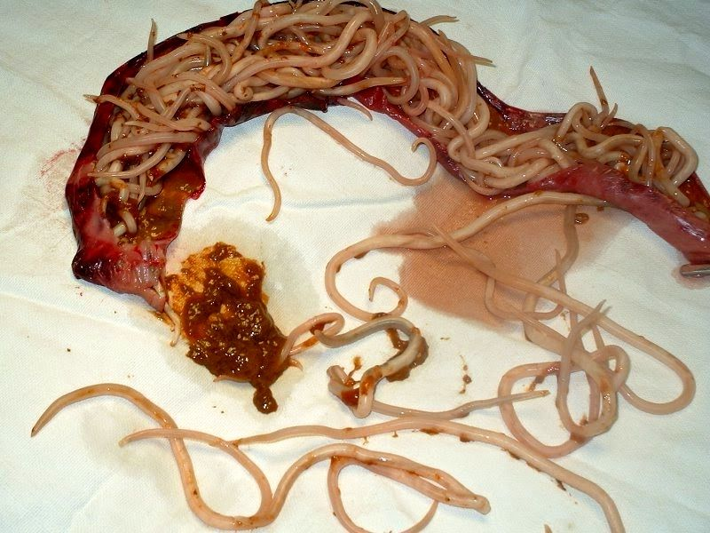
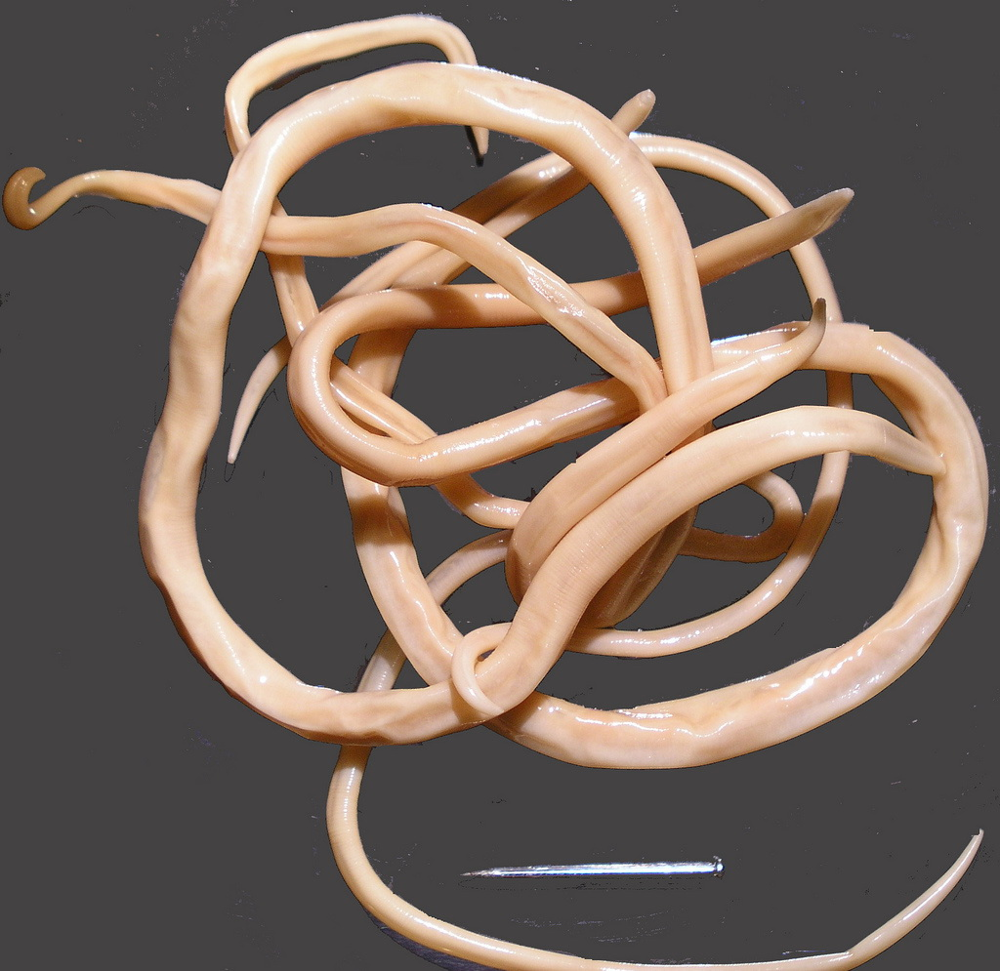

80% wszystkich chorób jest wywoływanych przez infekcje pasożytnicze. Jak nie stać się pokarmem dla robaków?
«Zakażenie pasożytami jest obarczone rozwojem całej gamy chorób: cukrzycy, nadciśnienia tętniczego, różnych rodzajów raka, niepłodności i wielu innych. Powodem jest to, że kluczowe produkty życia pasożyta zawierają toksyny, które powodują niedobór odporności ”- powiedział rzecznik Światowej Organizacji Zdrowia na spotkaniu z reporterami 25 grudnia 2019 r.
Mówi o połączeniu infekcji pasożytniczych i różnych chorób profesor, pasożytolog Agata Nowakowska.
Temat dzisiejszej rozmowy jest nieco nietypowy, ale nie mniej ważny. Od razu podam oficjalne statystyki:
-
• Światowa Organizacja Zdrowia informuje, że około 4,5 miliarda ludzi cierpi na różne choroby pasożytnicze - ponad 60% światowej populacji
-
• Co trzeci Europejczyk jest zarażony pasożytami
-
• 15-17 milionów ludzi umiera każdego roku na infekcje pasożytnicze
-
• Robaczycy - trzecia najczęstsza choroba na świecie
Oznacza to, że z dużym prawdopodobieństwem pasożyty żyją w Twoim ciele. I nawet jeśli nie żyją, prawdopodobieństwo zakażenia jest bardzo duże.
Askarioza jelitowaAscaridyŻywy organizm nie jest w stanie przetrwać bez krzemu - znany fakt. Podczas gdy pasożyty rozmnażające się w ciele, przede wszystkim zaczynają jeść krzem. Bez krzemu wapń - materiał budowlany kości - przestaje się wchłaniać. Stąd - rwa kulszowa, osteochondroza, zapalenie wielonaczyniowe.
 Rzęsistkowica
Rzęsistkowica
Ale najciekawsze odkrycie w dziedzinie parazytologii zostało dokonane w 1989 roku i otrzymało nazwę „Właściwość Rzęsistkowicy do degeneracji w komórkę nowotworową”. Okazuje się, że rak jest chorobą wywoływaną przez pasożyty . A głównym prowokatorem nowotworów jest Rzęsistkowica.
Tak więc czynnikami sprawczymi wszystkich chorób są pierwotniaki, grzyby i robaki.
„ Myślisz że nadwaga i robaki są niepołączone?” Nie właśnie nie. Dla osób zarażonych np. tasiemcami tłuszcz stanowi jedyną ochronę przed skutkami toksycznymi.
 Mózg delfina zainfekowany
pasożytami. Myślisz, że z ludzi takie się nie zdarza?...
Mózg delfina zainfekowany
pasożytami. Myślisz, że z ludzi takie się nie zdarza?...
Obecnie w ciele prawie każdego mieszkańca miasta żyje w robak lub grzyb. „Jeśli prawie wszyscy je mają, to czy to jest norma?” Nie, nie norma!
My, parazytolodzy, od dawna ostrzegamy przed tym. Głównym problemem jest brak środków, które mogłyby eksterminować wszystkie możliwe typy pasożytów danej osoby, nie zaszkodząc przy tym samej osobie.
Zaledwie kilka dni temu zakończyły się ostatnie próby kliniczne nowego leku – . I mogę już z pewnością powiedzieć, że jest to przełom w leczeniu infekcji pasożytniczych. Oprócz pełnej rehabilitacji, wykazał doskonałe „skutki uboczne” w postaci oczyszczania organizmu z toksyn, korzystny wpływ na narządy przewodu pokarmowego, stymulowanie odpływu żółci, pozbycie się wrzodów, zapalenia żołądka i wielu chorób przewlekłych; poprawa kondycji skóry, włosów, paznokci, normalizacja stolca, usunięcie alergie.
Komentarze:
Zostawić komentarz